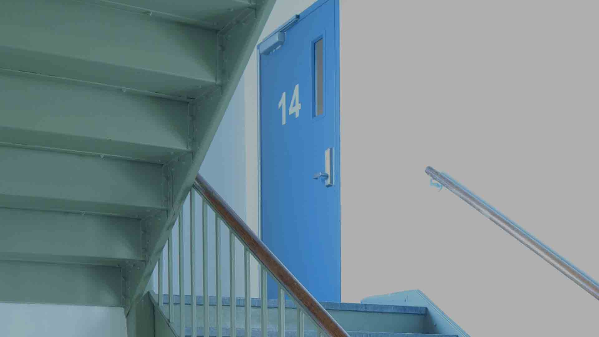

Go back home
Go to photoshop edit #1: cityscape

I chose this image and didn't even realize at first that it had a 14 in it, but that was a big year for me. I started high school at that age, and really began
a long journey of self-discovery that I'm not even close to finishing. Between all of the problems I had at home and with friends, it seemed like when you see
more and more flights of stairs when you're trying to get somewhere fast. You look up and say, there's more?!. Already tired but know you have to keep going,
it seems slow and steady has never been more true than in that moment. Starting in 2016, I knew that I was already at the bottom of the emotional barrel, and the
only way out was just to keep going up. I'm recovering slowly but surely now and the flare-ups of emotions I have sometimes can feel debilitatingly hard, but I
know nothing can ever stay bad for that long.